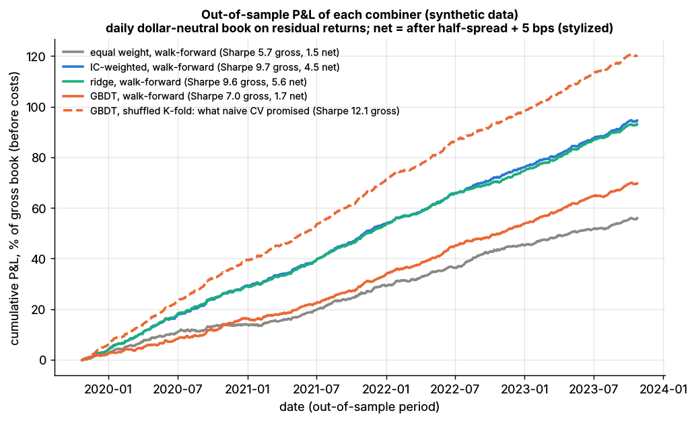

Alpha combination and ensembling¶
TL;DR
- The combiner turns 10–1,000 alphas into one forecast per stock, weighted by skill net of overlap, with weights stable enough to survive estimation error.
- The ladder: equal weight → IC weighting → ridge or mean-variance on the alpha covariance → nonlinear meta-models. Each rung estimates more parameters.
- Ridge sits between mean-variance (λ → 0) and IC weighting (λ → ∞) and pulls near-duplicates toward a shared weight. In Lab 12 it matched the oracle (out-of-sample IC 0.085 vs 0.087); equal weight, diluted by noise signals, scored 0.050 (synthetic lab result).
- IC weighting double-counts correlated signals. Weight fast-decaying signals by the alpha that survives costs, not by raw IC.
Level: Core · Pipeline stage: forecast · Last verified: 2026-11
| Field | Value |
|---|---|
| Purpose (the question it answers) | Which single forecast per stock, built from K overlapping signals, gives the best out-of-sample IC after costs? |
| Inputs → Outputs | Per-date ranked signals (date × stock × K) and forward residual returns or IC histories → weights (or a meta-model) and one composite forecast per stock |
| Used by strategies | Cross-sectional alpha · Stat arb overview · ML-driven short-horizon alpha · Analyst revisions and sentiment · Fundamental quant signals · NLP and LLM signals · Alternative data · Factor-residual mean reversion · Short-term reversal · Factor investing · Value, quality, low vol · Momentum · Trend following |
| Latency / compute regime | Overnight batch: a 100-signal ridge solve takes under a millisecond, a GBDT meta-model minutes; refit daily to monthly |
| Key parameters | IC lookback 1–3 years (half-life 6–24 months); ridge λ by purged CV; covariance shrinkage 30–70%; per-signal cap 10–25%; entry IC t-stat 2–3 [Lore] |
| Main failure modes | Double-counting near-duplicates; weights chasing recent IC; meta-models fit on in-sample base forecasts; ignoring decay and turnover |
| Lab | Lab 12 |
Intuition¶
Think of an investment committee: one vote per analyst; votes weighted by track record; track record discounted for analysts who echo a colleague; or a meta-analyst who learns whom to trust. Those are the four rungs of alpha combination.
The third rung is consolidation: eliminate intercompany balances before adding up subsidiaries. Two reversal signals from two researchers are mostly one bet; add their information coefficients (IC) as if independent and you book the same revenue twice.
The tension is estimation error. In the forecast combination puzzle, simple averages beat "optimal" weights because estimation error swamps skill differences (Smith & Wallis 2009) [Verified]. But equal weight fails once the library holds dead or duplicated signals.
Where it sits in the pipeline¶
flowchart LR
D3["Signal transforms<br/>rank, z-score, neutralize"] --> D4["Signal evaluation<br/>IC, decay, overlap"]
D4 --> F5["Alpha combination<br/>weights or meta-model"]
F1["Linear and tree models"] --> F5
V1["Purged walk-forward CV"] -->|"choose method, lambda"| F5
L2["Decay monitoring"] -->|"retire, down-weight"| F5
F5 --> P3["Optimizer with risk<br/>and cost models"]
P3 --> E1["Execution"]
style F5 fill:#ffd54f,stroke:#333flowchart TD
A["Equal weight<br/>0 parameters"] --> B["IC or IR weighting<br/>K parameters"]
B --> C["Ridge or mean-variance on alpha covariance<br/>K plus K x K overlap terms"]
C --> D["GBDT or stacking meta-model<br/>thousands of parameters"]
A -.- N1["robust, blind to skill and overlap"]
C -.- N2["uses overlap, needs shrinkage"]
D -.- N3["finds interactions, overfits easily"]The algorithm¶
- Prepare: rank or z-score and neutralize each signal per date (signal transforms); target = per-date rank of the forward residual return.
- Estimate on training dates only (purged, see time-series CV): each signal's mean daily IC and, for mean-variance, its IC series.
- Combine: equal weight, IC-weighted (negative ICs floored at zero), pooled ridge, max-IR on the IC covariance, or a GBDT meta-model.
- Forecast the next block with frozen weights; score out-of-sample rank IC, turnover and net P&L.
- Roll forward: refit monthly, cap any one signal's weight, re-neutralize, and log every variant tried (overfitting).
import numpy as np
import pandas as pd
# rank_target, combine_ic_weighted, fit_ridge: Lab 12 core functions (same names and logic).
# combine_mv and the loop are sketches added here. Rows = (date, stock).
# X: rows x K signals z-scored per date; dates: date index of each row.
def rank_target(ret, dates):
# per-date percentile rank of the forward residual return, mapped to [-0.5, 0.5]
g = pd.Series(ret).groupby(dates)
return ((g.rank() - 1) / (g.transform("count") - 1) - 0.5).to_numpy()
def combine_ic_weighted(X, ic):
# w ~ max(training IC, 0), summing to 1. Ignores overlap: a near-copy gets double weight
w = np.clip(np.asarray(ic, dtype=float), 0.0, None)
w = w / w.sum() if w.sum() > 0 else np.full(len(w), 1.0 / len(w))
return X @ w, w
def fit_ridge(X, y, lam):
# beta = (X'X + lam I)^-1 X'y. lam -> 0: OLS, uses overlap; lam -> inf: beta ~ X'y ~ IC weights
return np.linalg.solve(X.T @ X + lam * np.eye(X.shape[1]), X.T @ y)
def combine_mv(ic_hist, shrink=0.5):
# NOT in Lab 12. Max-IR weights from the alphas' daily IC series (T x K):
# w ~ inv(IC covariance) @ mean IC, with the covariance shrunk toward its diagonal
S = np.cov(ic_hist, rowvar=False)
S = (1 - shrink) * S + shrink * np.diag(np.diag(S))
w = np.linalg.solve(S, ic_hist.mean(axis=0))
return w / np.abs(w).sum()
# Lab 12 setting: 5-day horizon, lam = 0.1 x training rows (about 10% shrinkage)
# y = rank_target(fwd_resid_ret_5d, dates)
# for train_d, test_d in walk_forward_splits(n_dates, n_folds=5, horizon=5):
# tr, te = rows_of(train_d), rows_of(test_d)
# beta = fit_ridge(X[tr], y[tr], lam=0.1 * len(tr))
# forecast[te] = X[te] @ beta # weights frozen over the test block
Worked example with numbers¶
Illustrative. Signal A has IC 0.040; A′ is a noisy copy (correlation 0.85, IC 0.85 × 0.040 = 0.034); B has IC 0.030 and is uncorrelated with both. Composite IC is \(w^\top c / \sqrt{w^\top \Sigma w}\) (\(c\): ICs, \(\Sigma\): correlations).
| Method | Weights A / A′ / B | Composite IC |
|---|---|---|
| OLS = mean-variance, Σ⁻¹c | 57% / 0% / 43% | 0.0500 |
| Ridge, λ = 1 (correlation units) | 38% / 25% / 37% | 0.0489 |
| Equal weight | 33% / 33% / 33% | 0.0480 |
| IC-weighted | 38% / 33% / 29% | 0.0473 |
| Equal weight plus 10 pure-noise signals | 7.7% each | 0.0271 |
By hand: the inverse of the A/A′ correlation block is 1/(1 − 0.85²) = 3.60 times [[1, −0.85], [−0.85, 1]]. So β_A = 3.60 × (0.040 − 0.85 × 0.034) = 0.040, β_A′ = 3.60 × (0.034 − 0.85 × 0.040) = 0, and β_B = 0.030. Composite IC = √(0.040² + 0.030²) = 0.050.
A′ adds nothing A lacks; OLS sees this, IC weighting gives the A cluster 71%. The top four rows differ by under 6%; noise costs 46% of the IC, the Lab 12 story.
Why ridge ≈ shrinking toward equal weight. Strictly, ridge shrinks toward zero, and as λ grows its weights approach the ICs. But the penalty bites hardest on the small-eigenvalue direction, "A minus A′", so within a correlated cluster weights move toward equality: A : A′ goes from ∞ (OLS) to 1.5 (λ = 1) to 1.2 (λ = 10). Stock & Watson (2004) shrink explicitly toward 1/K instead [Verified].
Key parameters and how practitioners tune them¶
- Window: 1–3 years of daily ICs, or a 6–24-month exponential half-life
[Lore]. - λ and covariance shrinkage: chosen on purged walk-forward folds by rank IC. Lab 12's λ = 0.1 × rows is about 10% shrinkage, since X′X ≈ rows × Σ.
- Caps and floors: 10–25% per signal; negative-IC signals floored at zero, not flipped (a flip is a fresh data-mined bet)
[Lore]. - Decay-aware weights: if positions move a fraction κ per day toward target and alpha decays at δ = ln 2 / half-life, the book captures κ/(κ + δ) of gross alpha. At κ = 0.2, a 1-day half-life keeps 22%, a 20-day half-life 85%
[Estimate](derivation below). Hence Gârleanu & Pedersen (2013) weight slow signals more in the aim portfolio[Verified]. - Horizon blending: rescale signals to the optimizer's horizon by decay profile, or feed several horizons to a multi-period optimizer
[Lore].
Textbook version vs what firms actually do¶
- Textbook: Grinold & Kahn's refined forecast is volatility × IC × score; with several signals it becomes the regression Cov(r, g)·Var(g)⁻¹·g, the mean-variance combination (Grinold & Kahn 2000)
[Verified]. Qian, Hua & Sorensen (2007) maximize the composite's mean IC / sd IC instead: w ∝ Σ_IC⁻¹ · mean IC[Reported]. - Simple often beats optimal: in Stock & Watson the best combinations, like the mean, ignore recent performance
[Verified]; Smith & Wallis support ignoring forecast-error covariances[Verified]. That helps when covariances are noisy, and hurts when a true near-copy is present. - Practice: slowly refit, shrunk linear weights dominate mid-frequency books; nonlinear meta-models appear mostly in short-horizon ML books
[Lore]. For thousands of alphas, Kakushadze & Yu (2017) give an algorithm linear in their number[Verified]. Stacking must use out-of-fold base forecasts, as in Breiman (1996)[Reported]. - Signal-level vs portfolio-level (contested): blending signals nets opposing trades before they reach the market (how firms combine strategies). AQR researchers find integrating beats mixing for long-only style portfolios (Fitzgibbons et al. 2017)
[Verified]; Ghayur, Heaney & Platt (2018) find portfolio blending wins except at high factor exposure[Reported].
How to tell if it's working¶
- Composite out-of-sample rank IC beats the best single signal on identical purged folds; drop-one tests flag duplicates (near-zero marginal IC).
- Weights keep their signs across refits; turnover is reported next to IC.
Lab 12 (150 stocks × 1,260 days; 3 planted alphas, 1 near-duplicate, 10 noise signals; 1,045 walk-forward test dates), synthetic lab result: mean daily out-of-sample rank IC of 0.050 for equal weight, 0.082 IC-weighted, 0.085 ridge and 0.066 GBDT; oracle 0.087, best single signal 0.051. Ridge's in-sample IC (0.084) matched its out-of-sample IC; GBDT's was 0.238. The planted truth is linear, so trees add only variance here (tree ensembles).

Lab 12, synthetic data: cumulative out-of-sample P&L (before costs) of each combiner under walk-forward validation; dashed line, what naive shuffled K-fold promised for GBDT.
P&L follows IC: Sharpe 9.6 gross and 5.6 net for ridge, 5.7 and 1.5 for equal weight (synthetic lab result). These levels are stylized: clean, stable planted alphas, free factor hedging and simple costs, and the fundamental law turns a daily IC of 0.03 across 500 stocks into an IR near 0.03 × √(500 × 252) ≈ 10 [Estimate]. Real diversified multi-alpha equity books run about 1.5–3 gross and 1–2 net [Lore]; the PCA stat arb of Avellaneda & Lee (2010) earned 1.44 net over 1997–2007, an academic backtest that weakened later [Verified]. Compare rows, not levels.
Failure modes and pitfalls¶
- Double-counting: in Lab 12's last fold, IC weighting gave the original signal and its near-copy 43% of the weight; ridge gave the copy 6% of its absolute weight against 22% for the original (synthetic lab result).
- Chasing IC: short lookbacks whipsaw weights; handle alpha decay with decay monitoring.
- Stacking leak: a meta-model fit on in-sample base forecasts overweights the most overfit base model.
- Shared signals: popular alphas sit in many firms' composites and unwind together (crowding).
How practitioners talk about it¶
- "That new alpha is 0.8 correlated with the book, so its marginal IC is basically zero." → It duplicates existing signals.
- "We ridge the combo and cap anything above 20%." → Shrunk regression weights with concentration limits.
- "Fast stuff looks great on IC and dies on costs." → Weight by alpha that survives trading speed.
- "Blend at the signal level so the optimizer nets the trades." → Signal-level combination saves costs.
- "Stack on out-of-fold predictions only." → Meta-models must not see base models' training data.
Questions you could ask a quant about this¶
- Do you combine forecasts before the optimizer or positions after it? (basic)
- How do you weight alphas: equal, IC, regression or something nonlinear? (basic)
- How do you adjust weights for decay and turnover? (informed)
- What marginal IC must a new signal show to enter the combination? 🔒 (sharp)
- How much IC does your combiner add over equal weight, out of sample? 🔒 (sharp)
Go deeper¶
Math: composite IC, ridge along principal components, max-IR weights, decay capture
Signal correlation \(\Sigma\), IC vector \(c\):
Ridge, with \(\Sigma = \sum_j d_j u_j u_j^\top\):
so contrasts between near-duplicates (\(d_j \approx 1-\rho\)) shrink most, and \(\hat\beta \to c/\lambda\) (IC weighting) as \(\lambda \to \infty\).
Max-IR weights: \(w \propto \Sigma_{IC}^{-1}\,\overline{\text{IC}}\), with \(\Sigma_{IC}\) the covariance of daily ICs.
Decay capture with signal \(s_0 e^{-\delta t}\) and position \(\dot x = \kappa(s - x)\), \(x_0 = 0\):
Cost: ridge \(O(nK^2 + K^3)\); IC covariance \(O(TK^2)\).
Related pages¶
- Linear models and regularization · Tree ensembles
- Evaluating signals · Signal transforms
- Time-series cross-validation · Overfitting and multiple testing
- How firms combine strategies · Walkthrough: a mid-frequency stat-arb book
Sources¶
- [Verified] Grinold, R. C. & Kahn, R. N. (2000). Active Portfolio Management, 2nd ed. McGraw-Hill. https://www.econbiz.de/Record/active-portfolio-management-a-quantitative-approach-for-producing-superior-returns-and-controlling-risk/10004551679 (accessed 2026-11)
- [Reported] Qian, E., Hua, R. & Sorensen, E. (2007). Quantitative Equity Portfolio Management: Modern Techniques and Applications. Chapman & Hall/CRC. https://doi.org/10.1201/9781420010794 (accessed 2026-11)
- [Verified] Smith, J. & Wallis, K. F. (2009). "A Simple Explanation of the Forecast Combination Puzzle." Oxford Bulletin of Economics and Statistics 71(3), 331–355. https://doi.org/10.1111/j.1468-0084.2008.00541.x (accessed 2026-11)
- [Verified] Stock, J. H. & Watson, M. W. (2004). "Combination forecasts of output growth in a seven-country data set." Journal of Forecasting 23(6), 405–430. https://doi.org/10.1002/for.928 (accessed 2026-11)
- [Verified] Timmermann, A. (2006). "Forecast Combinations." Handbook of Economic Forecasting vol. 1, 135–196. https://doi.org/10.1016/S1574-0706(05)01004-9 (accessed 2026-11)
- [Verified] Kakushadze, Z. & Yu, W. (2017). "How to combine a billion alphas." Journal of Asset Management 18(1), 64–80. https://doi.org/10.1057/s41260-016-0004-9 (accessed 2026-11)
- [Reported] Breiman, L. (1996). "Stacked Regressions." Machine Learning 24(1), 49–64. https://doi.org/10.1007/BF00117832 (accessed 2026-11)
- [Verified] Gârleanu, N. & Pedersen, L. H. (2013). "Dynamic Trading with Predictable Returns and Transaction Costs." Journal of Finance 68(6), 2309–2340. https://doi.org/10.1111/jofi.12080 (accessed 2026-11)
- [Verified] Fitzgibbons, S., Friedman, J., Pomorski, L. & Serban, L. (2017). "Long-Only Style Investing: Don't Just Mix, Integrate." Journal of Investing 26(4), 153–164. https://doi.org/10.3905/joi.2017.26.4.153 (accessed 2026-11)
- [Reported] Ghayur, K., Heaney, R. & Platt, S. (2018). "Constructing Long-Only Multifactor Strategies: Portfolio Blending vs. Signal Blending." Financial Analysts Journal 74(3), 70–85. https://doi.org/10.2469/faj.v74.n3.5 (accessed 2026-11)
- [Verified] Avellaneda, M. & Lee, J.-H. (2010). "Statistical arbitrage in the US equities market." Quantitative Finance 10(7), 761–782. https://doi.org/10.1080/14697680903124632 (accessed 2026-11)